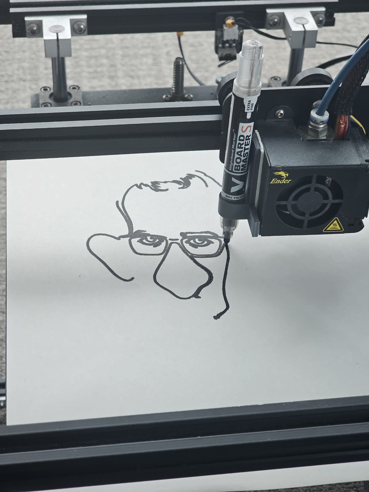
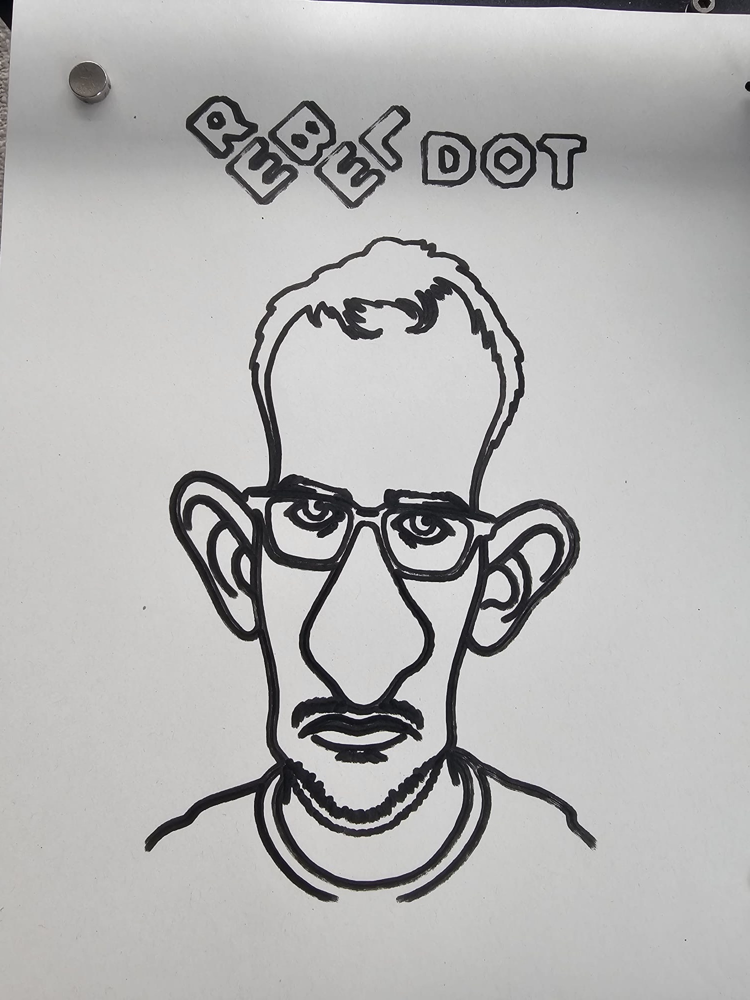
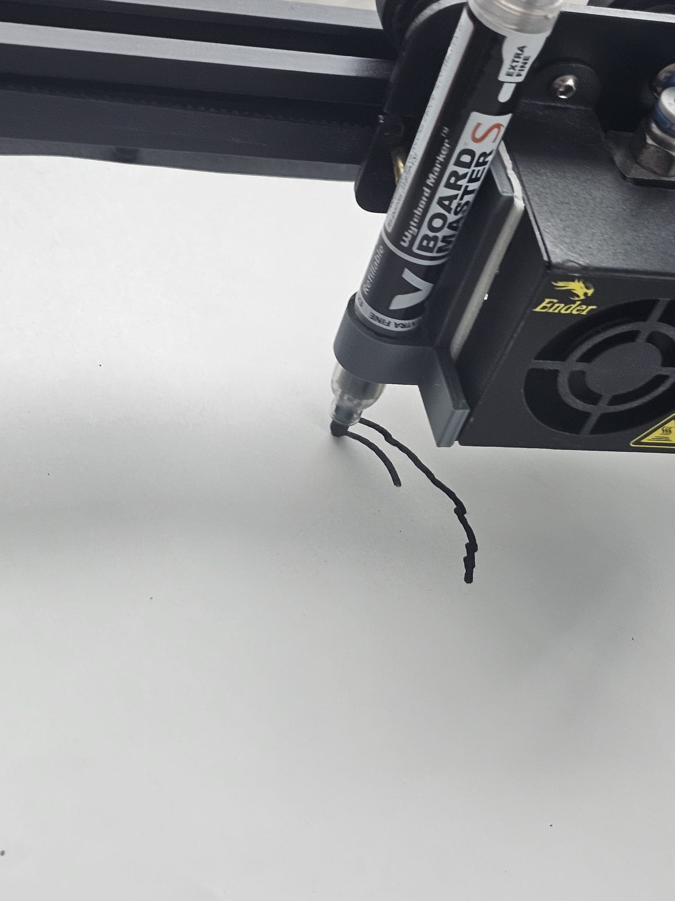

Our 3D printer draws caricatures now
Two of us spent an afternoon turning an Ender 5 into a portrait machine. It draws a gleefully exaggerated version of whoever sits in front of it, in marker. The best part was getting it to talk to the printer.
Point a camera at someone, wait a couple of minutes, and our Ender 5 Pro starts dragging a marker across paper, working out a wildly exaggerated version of their face. Big head, big ears, bigger nose. When it finishes it letters REBEL DOT in the corner like a signature.

The pipeline is short. A photo goes to an image model that comes back with a heavily exaggerated, line-only drawing. We trace that into vector paths, convert the paths to Marlin G-code, and send it to the printer, which never heats up or extrudes a thing. The marker lifts and drops, the bed and gantry handle the rest.

Left: the photo we fed in. Right: what the printer handed back. That's a real likeness out of surprisingly few lines.
From "let's try this" to the first real drawing took about four hours. Two of us split the work: one took the side that makes the caricature and turns it into pen strokes, the other took the printer. We stitched the halves together and it ran.
The bit I keep retelling is the printer half. It was plugged into the machine over USB and nothing else was set up. The instruction to the agent was roughly:
I've connected a 3D printer over USB. Figure it out and make it draw this.
We didn't give it a port, a baud rate, or the name of a library. It worked through the USB serial devices one at a time, sent each one a firmware query, and watched for the one that answered like the Ender's Marlin board. It opened that port without resetting the board, so the home position and pen height we'd set by hand survived. Then it streamed the G-code line by line, waiting for the printer to say ok after every move so it never overran the buffer.
And the printer started drawing.

Nobody handed it a runbook. We didn't name the port, the firmware, or the trick about not resetting the board. We said figure it out, and it did, on hardware it had never seen, first try. Writing code that compiles is one thing. Watching it reach down a USB cable and correctly drive a physical machine you only mentioned in passing is another. Our office cameras pulled almost the same stunt a couple of weeks ago. I'm starting to think this is just what the good agents do now.
The caricatures come out gloriously ugly, and that's the point. Four hours, two people, and a 3D printer that draws faces in marker. Easily one of the most fun things we've built. 😀
The printer is an Ender 5 Pro running Marlin, with a whiteboard marker clamped to the print head next to the (unused) hot end. Caricatures come from an image model (Nano Banana 2), get vectorized to SVG, then converted to Marlin G-code. The agent located the board by sending M115 to each /dev/ttyUSB* and matching the firmware reply, opened the serial port with DTR/RTS held low so the board wouldn't reboot and lose its hand-set origin, and streamed the G-code line by line with an ok handshake. Built at RebelDot on 13 June 2026.
Keep Reading
Continue with the blog index, read how the agent figured out left from right on our robot cameras, or how I built Crayo in 3 days.